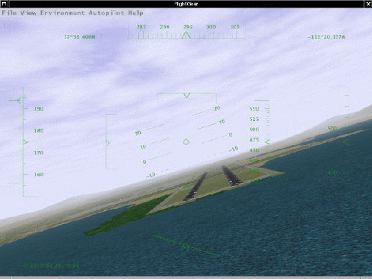

|
HREF="getstartch2.html" >[next] [prev] [prev-tail] [end] [up]
Did you ever want to fly a plane yourself, but lacked the money or ability to
do so? Are you a real pilot looking to improve your skills without having to
take off? Do you want to try some dangerous maneuvers without risking your
life? Or do you just want to have fun with a more serious game without any
violence? If any of these questions apply to you, PC flight simulators are just for
you.
You may already have some experience using Microsoft’s © Flight Simulator or any
other of the commercially available PC flight simulators. As the price tag of those is
usually within the $50 range, buying one of them should not be a serious problem given
that running any serious PC flight simulator requires PC hardware within the $1500
range, despite dropping prices.
With so many commercially available flight simulators, why would we spend
thousands of hours of programming and design work to build a free flight simulator?
Well, there are many reasons, but here are the major ones:
- All of the commercial simulators have a serious drawback: they are made
by a small group of developers defining their properties according to what
is important to them and providing limited interfaces to end users. Anyone
who has ever tried to contact a commercial developer would agree that
getting your voice heard in that environment is a major challenge. In contrast,
FlightGear is designed by the people and for the people with everything out
in the open.
- Commercial simulators are usually a compromise of features and usability.
Most commercial developers want to be able to serve a broad segment of
the population, including serious pilots, beginners, and even casual gamers.
In reality the result is always a compromise due to deadlines and funding.
As FlightGear is free and open, there is no need for such a compromise.
We have no publisher breathing down our necks, and we’re all volunteers
that make our own deadlines. We are also at liberty to support markets that
no commercial developer would consider viable, like the scientific research
community.
- Due to their closed-source nature, commercial simulators keep developers
with excellent ideas and skills from contributing to the products. With
FlightGear, developers of all skill levels and ideas have the potential to make
a huge impact on the project. Contributing to a project as large and complex
as FlightGear is very rewarding and provides the developers with a great
deal of pride in knowing that we are shaping the future of a great simulator.
- Beyond everything else, it’s just plain fun! I suppose you could compare us
to real pilots that build kit-planes or scratch-builts. Sure, we can go out a
buy a pre-built aircraft, but there’s just something special about building one
yourself.
The points mentioned above form the basis of why we created FlightGear. With those
motivations in mind, we have set out to create a high-quality flight simulator that aims to
be a civilian, multi-platform, open, user-supported, and user-extensible platform. Let us
take a closer look at each of these characteristics:
- Civilian: The project is primarily aimed at civilian flight simulation. It
should be appropriate for simulating general aviation as well as civilian
aircraft. Our long-term goal is to have FlightGear FAA-approved as a flight
training device. To the disappointment of some users, it is currently not
a combat simulator; however, these features are not explicitly excluded.
We just have not had a developer that was seriously interested in systems
necessary for combat simulation.
- Multi-platform: The developers are attempting to keep the code as
platform-independent as possible. This is based on their observation that people
interested in flight simulations run quite a variety of computer hardware and
operating systems. The present code supports the following Operating
Systems:
- Linux (any distribution and platform),
- Windows NT/2000/XP (Intel/AMD platform),
- Windows 95/98/ME,
- BSD UNIX,
- SGI IRIX,
- Sun-OS,
- Macintosh.
At present, there is no known flight simulator - commercial or free - supporting
such a broad range of platforms.
- Open: The project is not restricted to a static or elite cadre of developers. Anyone
who feels they are able to contribute is most welcome. The code (including
documentation) is copyrighted under the terms of the GNU General Public License
(GPL).
The GPL is often misunderstood. In simple terms it states that you can copy and
freely distribute the program(s) so licensed. You can modify them if you like and
even charge as much money as want to for the distribution of the modified or
original program. However, you must freely provide the entire source code to
anyone who wants it, and it must retain the original copyrights. In short:
”You can do anything with the software except make it non-free”.
The full text of the GPL can be obtained from the FlightGear source code or from
http://www.gnu.org/copyleft/gpl.htm.
- User-supported and user-extensible: Unlike most commercial simulators,
FlightGear”s scenery and aircraft formats, internal variables, APIs, and everything
else are user accessible and documented from the beginning. Even without any
explicit development documentation (which naturally has to be written at
some point), one can always go to the source code to see how something
works. It is the goal of the developers to build a basic engine to which
scenery designers, panel engineers, maybe adventure or ATC routine
writers, sound artists, and others can build upon. It is our hope that the
project, including the developers and end users, will benefit from the
creativity and ideas of the hundreds of talented ”simmers” around the
world.
Without doubt, the success of the Linux project, initiated by Linus Torvalds, inspired
several of the developers. Not only has Linux shown that distributed development of
highly sophisticated software projects over the Internet is possible, it has also proven that
such an effort can surpass the level of quality of competing commercial products.

Fig. 1: FlightGear under UNIX: Bad approach to San Francisco International - by one of
the authors of this manual. . .
In comparison to other recent flight simulators, the system requirements for FlightGear
are not extravagant. A decent PIII/800, or something in that range, should be
sufficient given you have a proper 3-D graphics card. Additionally, any modern
UNIX-type workstation with a 3-D graphics card will handle FlightGear as
well.
One important prerequisite for running FlightGear is a graphics card whose driver
supports OpenGL. If you don’t know what OpenGL is, the overview given at the
OpenGL website
http://www.opengl.org
says it best: “Since its introduction in 1992, OpenGL has become the industry’s most
widely used and supported 2-D and 3-D graphics application programming interface
(API)...”.
FlightGear does not run (and will never run) on a graphics board which only
supports Direct3D. Contrary to OpenGL, Direct3D is a proprietary interface, being
restricted to the Windows operating system.
You may be able to run FlightGear on a computer that features a 3-D video card
not supporting hardware accelerated OpenGL - and even on systems without
3-D graphics hardware at all. However, the absence of hardware accelerated
OpenGL support can bring even the fastest machine to its knees. The typical
signal for missing hardware acceleration are frame rates below 1 frame per
second.
Any modern 3-D graphics featuring OpenGL support will do. For Windows video
card drivers that support OpenGL, visit the home page of your video card manufacturer.
You should note that sometimes OpenGL drivers are provided by the manufacturers of
the graphics chip instead of by the makers of the board. If you are going to buy a
graphics card for running FlightGear, one based on a NVIDIA chip (TNT X/Geforce X)
might be a good choice.
To install the executable and basic scenery, you will need around 50 MB of free disk
space. In case you want/have to to compile the program yourself you will need about an
additional 500 MB for the source code and for temporary files created during
compilation. This does not include the development environment, which will vary in size
depending on the operating system and environment being used. Windows users can
expect to need approximately 300 MB of additional disk space for the development
environment. Linux and other UNIX machines should have most of the development
tools already installed, so there is likely to be little additional space needed on those
platforms.
For the sound effects, any capable sound card should suffice. Due to its flexible
design, FlightGear supports a wide range of joysticks and yokes as well as rudder pedals
under Linux and Windows. FlightGear can also provide interfaces to full-motion flight
chairs.
FlightGear is being developed primarily under Linux, a free UNIX clone (together
with lots of GNU utilities) developed cooperatively over the Internet in much the same
spirit as FlightGear itself. FlightGear also runs and is partly developed under several
flavors of Windows. Building FlightGear is also possible on a Macintosh OSX and
several different UNIX/X11 workstations. Given you have a proper compiler installed,
FlightGear can be built under all of these platforms. The primary compiler for all
platforms is the free GNU C++ compiler (the Cygnus Cygwin compiler under
Win32).
If you want to run FlightGear under Mac OSX we suggest a Power PC G3 300 MHz
or better. As a graphics card we would suggest an ATI Rage 128 based card as a
minimum. Joysticks are supported under Mac OS 9.x only; there is no joystick support
under Max OSX at this time.
Concerning the FlightGear source code there exist two branches, a stable branch and a
developmental branch. Even version numbers like 0.6, 0.8, and (someday hopefully) 1.0
refer to stable releases, while odd numbers like 0.7, 0.9, and so on refer to developmental
releases. The policy is to only do bug fixes in the even versions, while new features are
generally added to odd-numbered versions which, after all things have stabilized, will
become the next stable release with a version number calculated by adding
0.1.
To add to the confusion, there usually are several versions of the ”unstable” branch.
First, there is a ”latest official release” which the pre-compiled binaries are based on. It is
available from
ftp://ftp.flightgear.org/pub/fgfs/Source/FlightGear-X.Y.Z.tar.gz
For developers there exist CVS snapshots of the source code, available from
ftp://www.flightgear.org/pub/flightgear/Devel/Snapshots/.
While theses are quite recent, they may still be sometimes a few days back behind
development. Thus, if you really want to get the very latest and greatest (and, at
times, buggiest) code, you can use a tool called anonymous cvs available from
http://www.cvshome.org/
to get the recent code. A detailed description of how to set this up for FlightGear can be
found at
http://www.flightgear.org/cvsResources/.
Unfortunately, the system implemented above does not really work as it should. As a
matter of fact, the stable version is usually so much outdated, that it does not at all reflect
the state of development FlightGear has reached. Given that the recent developmental
versions on the other hands may contain bugs (. . . undocumented features), we
recommend using the ”latest official (unstable) release” for the average user. This is the
latest version named at
http://www.flightgear.org/News/;
usually this is also the version which the binary distributions available at
http://www.flightgear.org/Downloads/
are based on. If not otherwise stated, all procedures in this “Installation and Getting
Started” will be based on these packages.
Historically, FlightGear has been based on a flight model it inherited (together with the
Navion airplane) from LaRCsim. As this had several limitations (most important,
many characteristics were hard wired in contrast to using configuration files),
there were several attempts to develop or include alternative flight models. As a
result, FlightGear supports several different flight models, to be chosen from at
runtime.
The most important one is the JSB flight model developed by Jon Berndt. Actually,
the JSB flight model is part of a stand-alone project called JSBSim, having its home at
http://jsbsim.sourceforge.net/.
Concerning airplanes, the JSB flight model at present provides support for a Cessna 172,
a Cessna 182, a Cessna 310, and for an experimental plane called X15. Jon and his group
are gearing towards a very accurate flight model, and the JSB model has become
FlightGear’s default flight model.
As an interesting alternative, Christian Mayer developed a flight model of a hot air
balloon. Moreover, Curt Olson integrated a special ”UFO” slew mode, which helps you
to quickly fly from point A to point B.
Recently, Andrew Ross contributed another flight model called YASim for Yet
Another Simulator. At present, it sports another Cessna 172, a Turbo 310, a fairly good
DC-3 model, along with a Boeing 747, Harrier, and A4. YASim takes a fundamentally
different approach since it’s based on geometry information rather than aerodynamic
coefficients. Where JSBSim will be exact for every situation that is known and flight
tested, but may have odd and/or unrealistic behavior outside normal flight, YASim will be
sensible and consistent in almost every flight situation, but is likely to differ in
performance numbers.
As a further alternative, there is the UIUC flight model, developed by a team at the
University of Illinois at Urbana-Champaign. This work was initially geared toward
modeling aircraft in icing conditions together with a smart icing system to better enable
pilots to fly safely in an icing encounter. While this research continues, the
project has expanded to include modeling ”nonlinear” aerodynamics, which
result in more realism in extreme attitudes, such as stall and high angle of attack
flight. Two good examples that illustrate this capability are the Airwave Xtreme
150 hang glider and the 1903 Wright Flyer. For the hang glider, throttle can
be use to fly to gliding altitude or Ctrl-U can be used to jump up in 1000-ft
increments. Try your hand at the unstable Wright Flyer and don’t stall the canard!
Considerable up elevator trim will be required for level flight. In general, the
aerodynamics are probably very close to the original Wright Flyer as they are
partly based on experimental data taken on a replica tested recently at the NASA
Ames Research Center. Also included are two more models, a Beech 99 and
Marchetti S-211 jet trainer, which are older generation UIUC/FGFS models
and based on simpler ”linear” aerodynamics. More details of the UIUC flight
model and a list of aircraft soon to be upgraded can be found on their website at
http://amber.aae.uiuc.edu/ m-selig/apasim.htm m-selig/apasim.htm
Note that the 3D models of the UIUC airplanes can be downloaded from a site
maintained by Wolfram Kuss
http://home.t-online.de/home/Wolfram.Kuss/
It is even possible to drive FlightGear’s scene display using an external FDM running
on a different computer - although this might not be a setup recommended to people just
getting in touch with FlightGear.
There is little, if any, material in this Guide that is presented here exclusively. You could
even say with Montaigne that we ”merely gathered here a big bunch of other men’s
flowers, having furnished nothing of my own but the strip to hold them together”. Most
(but fortunately not all) of the information herein can also be obtained from the
FlightGear web site located at
http://www.flightgear.org/
Please, keep in mind that there are several mirrors of the FlightGear web sites, all
of which are linked to from the FlightGear homepage listed above. You may
prefer to download FlightGear from a mirror closer to you than from the main
site.
This FlightGear Installation and Getting Started manual is intended to be a first step
towards a complete FlightGear documentation. The target audience is the end-user who
is not interested in the internal workings of OpenGL or in building his or her own
scenery. It is our hope, that someday there will be an accompanying FlightGear
Programmer’s Guide (which could be based on some of the documentation found at
http://www.flightgear.org/Docs;
a FlightGear Scenery Design Guide, describing the Scenery tools now packaged as
TerraGear; and a FlightGear Flight School package.
As a supplement, we recommend reading the FlightGear FAQ to be found
at
http://www.flightgear.org/Docs/FlightGear-FAQ.htm
which has a lot of supplementary information that may not be included in this
manual.
We kindly ask you to help us refine this document by submitting corrections,
improvements, and suggestions. All users is invited to contribute descriptions of
alternative setups (graphics cards, operating systems etc.). We will be more than
happy to include those into future versions of this Installation and Getting Started (of
course not without giving credit to the authors).
While we intend to continuously update this document, we may not be able to
produce a new version for every single release of FlightGear. To do so would require
more manpower that we have now, so please feel free to jump in and help out. We
hope to produce documentation that measures up to the quality of FlightGear
itself.
| 
 and Andrei Barbu a_barbu2@yahoo.com
and Andrei Barbu a_barbu2@yahoo.com